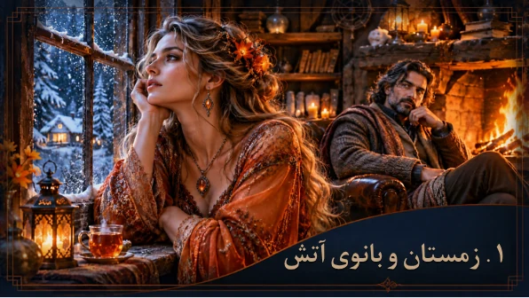
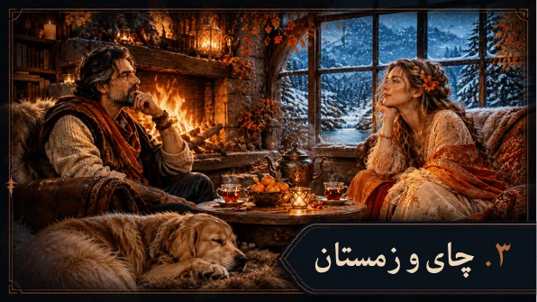
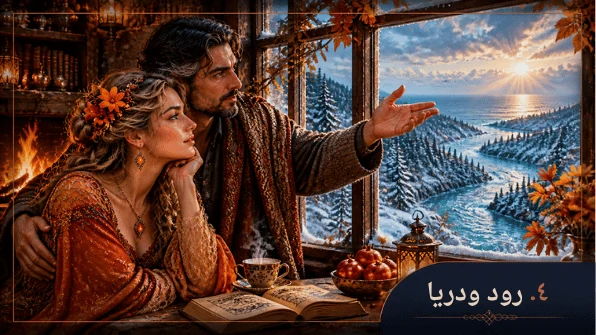

بوی بهارنارنج در زمستان

صبح، مرد کنار شومینه از خوابی کوتاه برخاست. برف هنوز بر شیشه مینشست و آب میشد. کنار سماور، بر شاخهای که در گلدان بود، یکی از غنچههای نارنج باز شده بود. بانوی آتش گفت شب پیش متوجهش نشده بود. مرد خم شد و بوی شکوفه را گرفت؛ بویی چنان کمجان که مرد برای دریافتنش لحظهای دم فروبست.
از توشهای که با خود به جنگل برده بود، چای خشک درآورد و از قمقمهاش در کتری آب ریخت. خودش چای را دم کرد و فنجانی پیش بانو گذاشت. بعد از جوانی گفت؛ از فرصتی که آدمی آن را پیشِ روی خویش میپندارد و ناگهان درمییابد که از آن گذشته است. دو سطر از شعر قیصر امینپور به یادش آمد:
بیعشق سر مکن کهدلت پیر میشود
بانو فنجان را با هر دو دست گرفت. «این دو سطر را برای کسی میخوانی که دلش گرفته یا برای خودت؟»
مرد خندید. «شاید برای خودم. تمام روزگارم لحظهایست؛ من کجا یک روز زیستم؟ گاهی خیال میکنم طفلی تازهزادهام که آبستنِ خویشم. نمیدانم کی و کجا از این منیّت فارغ خواهم شد. اینقدر میدانم که زیستن را دوست دارم.»
«پس دلت برای جوانی تنگ نمیشود؟»
«برای فرصتهایی که بیفکر از دست دادم، چرا. برای آنکه عمر از همان راه بازگردد، نه. میخواهم هنوز عطرِ شکوفهای مرا غافلگیر کند. گاه نیز سراسر خورشیدی جوشانم و آرزو میکنم اَبَرنواختری کوچک شوم.»
بانو چشم به پنجره دوخت و لبخند زد. «ابر میشوی که بباری؟»
«اَبَر به معنای بزرگ، بانو؛ اَبَرنواختر. از انفجارِ ستاره میگویم، نه از ابرِ باران. اما اکنون که نامش را بردی، باران نیز آرزوی من است. بارانِ بیدغدغه، هوای نرم بهار، عطرِ بهارنارنج.»
بانو دوباره شکوفه را بویید. «عجیب است که هم دلت آنهمه شکوه میخواهد و هم به همین بوی کم راضی میشوی. شاید قرار نیست یکی را به خاطر دیگری از خودت بگیری.» بعد انگشتش را بر لبهٔ فنجان گذاشت و گفت: «اما گفتی زیستن را دوست داری. اگر دوست داشتن اینقدر به زنده ماندن مربوط است، چرا قیصر میگوید بیعشق سر مکن؟ ممکن نیست هر دو از یک چیز حرف بزنید؟»
رود را در قاب مگذار

مرد چند تکه هیزم بر آتش گذاشت و پنجره را باز کرد. بادی که از جنگل میآمد پرده را کنار زد. مرد زیر لب گفت: «در زمستانی، بهارم آرزوست.» لحظهای همانجا ماند؛ سپس به رود باریکی اشاره کرد که از میان کاجها میگذشت. رگهٔ آب در شکاف یخ دیده میشد و هر چند قدم از چشم میافتاد.
مرد گفت: «دوست داشتن را بر آن عاشقی که آدمی را صاحبِ حق میپندارد برتر میدانم. دوست میداری و آرام میگیری؛ جهان نیز از قرارِ تو بهرهای میبَرد. اما به نامِ عاشقی از دیگری میخواهند نهتنها آنان را بفهمد، که پا به پایشان در جهانی ناشناخته قدم بگذارد. اگر نپذیرد، چنان از او میرنجند که گویی چیزی از حقشان کاسته است.»
بانو پرسید: «یعنی عاشق فقط خویشتن را در آینهٔ دیگری میبیند؟ من کسانی را هم دیدهام که نامِ یک دلبستگیِ آزاد را عشق میگذارند. اگر کسی شیفتهٔ رود باشد و بگذارد رود راه خودش را برود، حرفت دربارهٔ او هم صدق میکند؟»
مرد روی صندلی کنار پنجره نشست. «در نامش یقین ندارم؛ در فرقِ میان آن دو رفتار، چرا. گاه چشم از آب و رود و دریا برنمیداری و جز آنچه پیشِ رویت است نمیبینی؛ گاه سرچشمه را نیز میبینی، و لطفِ باران و بخشندگیِ دریا را. یک جرعه از رود جانِ تو را تازه میکند؛ چه نیاز است که تمامِ رود را به قاب ببری تا از آنِ تو باشد؟»
«و اگر بترسی منظره را از دست بدهی و بخواهی نگهش داری؟»
«قاب میماند؛ شاید زیباییاش هم مدتی بماند. اما رود به روانیِ خویش رود بود: از سنگ میگذشت و سنگ را صیقل میداد. آبی که در قاب نگاه داشتهای دیگر به جایی نمیرسد. چون بخواهی بدانی از آن زیبایی چه مانده است، چهبسا جز صورتِ خود در آبِ بیجنبش نبینی.»
بانوی آتش به شکاف یخ نگاه کرد. «این همان فرقِ در آغوش گرفتن و در خود بلعیدن است. اما تو از نگهداشتنِ بهزور حرف میزنی. اگر کسی خودش بخواهد بماند چه؟ اگر نه از ترس، نه از احتیاج، بلکه به انتخاب خودش کنارت بنشیند، پذیرفتنش هم تملک است؟»
مرد سرش را بلند کرد. «نه، اگر برای ماندن ناگزیر نشود آنچه را هست پنهان کند. از دریا شدن میگویم، نه از بستنِ راهِ رود. آدمی میتواند به جای آنکه جهان را بر مدارِ خواهشِ خود بگرداند، خویش را چنان بپرورد که حضورش برای دیگری جایِ آرامش باشد. رود را بنگر که از کوه و دشت میگذرد؛ راهش را مگیر. اگر دریایش باشی، خود خواهد آمد.»
بانو گفت: «صبر کن، همین ‹خودش میآید› کار را دشوار میکند. اگر آزادی دارد، آزادیِ نیامدن هم دارد. ممکن است به دریای دیگری برسد، یا در کویر گم شود. اگر فقط برای رسیدنِ همان یک رود دریا شوی، از کجا بدانم هنوز در دلِ آن دریا سدی نساختهای؟»
مرد جواب نداد. باد شعله را بهسوی دهانهٔ شومینه خم کرد. بانو افزود: «و اگر رسید و در تو آمیخت، چه چیز از خودش باقی میماند؟»
صدایی که از دور هم میرسد
مرد مدتی به جریانِ پشت شیشه چشم دوخت. «حق با توست. اگر رسیدنش شرط باشد، رهایش نکردهام. اما رود در دریا به تمامی پایان نمیپذیرد؛ لیوانی آب نیست که یکبار تهی شود و از میان برود. تا سرچشمه و راهی هست، رو به دریاست. و اگر برسد، فصلی دیگر از زندگیاش آغاز میشود. پهنای دریا از بخششِ رودهاست؛ جوانیِ رود نیز میتواند هدیهٔ دریا باشد.»
«و همان رودِ مشخص، اگر هیچوقت نرسید؟»
«آیا دریا بیم دارد از اینکه یک رود به آن نریزد و خود نابود شود؟ صدای رود، از دوردست نیز شنیدنیست. دریا با خورشید و خاک و آبهای دیگر بیگانه نیست؛ آبش بخار میشود، ابر میشود و به صورتِ باران بر سرچشمهها میبارد. شاید بارانی که از دریا برخاسته، رودی را که هرگز به آن نپیوسته جوانتر کند؛ بیچشمداشت. گاه کویر آب را فرومیبرد، گاه چینِ کوه راهش را میگرداند؛ اختیارِ هیچکدام در کفِ دریا نیست.»
بانوی آتش گفت: «پس دریا بینیاز نیست. خورشید و ابر و زمین هرکدام کاری میکنند که از دیگری برنمیآید. فرق این است که دریا نیازش را به حکمِ مالکیت تبدیل نمیکند. در آن صورت، پیوند شاید پیش از رسیدن آغاز شده باشد؛ وقتی باران بر سرچشمه میخورد.»
مرد به نشانهٔ قبول سر فرود آورد. «همین. دریا برای هزاران گیاه و جاندار جا دارد، بیآنکه از دریاییِ خویش دست بردارد؛ جهانی به او زنده است و او نیز به جهانی. وقتی میگویم «دریا شو، بانوی آتش؛ رود خودش میآید»، نباید در نهان وعدهٔ آمدنِ همان رودی را بخواهم که نشان کردهام. نیامدنِ او دلیل نیست که دریا از گشودگیِ خویش پشیمان شود.»
بانو نگاهی به فنجانهایشان انداخت. «این را میپذیرم؛ اما هنوز نمیدانم این شیوهٔ دوست داشتن از همان اول زبانی جداست، یا کسی که اول عاشقانه میخواسته دیگری را داشته باشد، میتواند کمکم یاد بگیرد فقط خوب بودنِ او را بخواهد.»
بستن پنجره

مرد برخاست. سوز هوا دیگر از لای آستینش میگذشت و نوک انگشتانش را کرخت میکرد. پنجره را بست، دستهایش را به هم مالید و جلوی شومینه گرفت. «بنگر، بانو. زمستان را دوست دارم؛ حتی سوزش برایم بوی همان عشقی را دارد که اکنون با نامش در ستیزم. اما پنجره را بستم تا سرما به استخوانم نرسد. آیا از آن رو زمستان را نفهمیدهام، یا کمتر دوستش دارم؟»
بانوی آتش از پشت شیشه به برف نگاه کرد. «برای دوست داشتنِ زمستان لازم نیست در آغوشش یخ بزنی. دوست داشتن و نزدیک شدن یکی نیستند. عقل، فاصله را تنظیم میکند؛ محبت، معنای فاصله را.» لحظهای دستش را بر شیشه گذاشت. «اما فاصله هم همیشه نشانهٔ خرد نیست. با کسی به انتخابِ خود ماندن، گاهی به قدر رفتن محترم است. اگر نمانی چون نمیتوانی بمانی، با آنکه میتوانی و آگاهانه رفتن را انتخاب میکنی، یکی نیست.»
مرد گفت: «آری؛ گاه گذاشتن و رفتن خودِ دوست داشتنِ ژرف است، و گاه ماندن. اما برای اثباتِ آن، نمیتوان زمستان و آتش را بیهیچ فاصلهای در کنارِ هم نشاند. کویر و دریا، خورشید و آب، کوه و دره، به یکدیگر نزدیکاند؛ میانشان نیز فاصلهای هست که هر یک را همان که هست نگاه میدارد. اگر وصال در گروِ از میان رفتنِ یکی باشد، ماندنِ هر دو را بر چنین وصالی ترجیح میدهم.»
بانو رو به او کرد. «برای همین میپرسم. شاید کسی اول بخواهد محبوبش را داشته باشد و چند سال بعد از خودش بگذرد و خوب بودنِ او را بخواهد، حتی اگر کنارش نباشد. نمیشود گفت نامِ این راه از اول تا آخر عشق بوده؟»
«نمیگویم که آدمی دگرگون نمیشود. میگویم عشق الفبای دوست داشتن نیست، بانو. دوست داشتن زبانی مستقل است و لغتنامهٔ خویش را دارد. برای آموختنِ آزاد گذاشتن، نیازی نیست نخست کسی را در بند کنی. اگر شاخهای خشک است و نور را از دیگر شاخهها دریغ میکند، باید آن را هرس کرد؛ به نامی تازه سبز نخواهد شد.»
شمع را برای پروانه روشن نکردهاند
روی طاقچه شمعی میسوخت. بانوی آتش، که حرف از هرس و درخت را شنیده بود، چشم به شعله دوخت. «پس بگذار امشب پروانهای نسوزد، تا شاعری از مرگش قصیدهای نسازد.» برخاست و شمع را از لبِ پرده دور کرد، بیآنکه خاموشش کند. بعد گفت: «ولی خودت میدانی در شعر، سوختن همیشه به معنای مرگ یا ستایشِ رنج نیست. گاهی پروانه از خودخواهیاش میگذرد، نه از جانش.»
مرد پذیرفت. «نماد را میفهمم. گرفتاری آنگاه آغاز میشود که کسی بخواهد با جانِ آدمی همان کند که شاعر با پروانهاش کرده است. شمع میسوزاند، چون شمع است؛ برای سوزاندنِ پروانه روشنش نکردهاند. اگر پروانه نور را دوست دارد، چرا باید یکباره خویش را به شعله بزند؟ گامی دورتر نیز مجالِ پرواز دارد؛ فردا باز نور را میبیند و شمع همچنان شمع میماند.»
«و به نظرت آدمهایی که در راه دیگری از چیزی میگذرند، دارند همیشه همان اشتباه را میکنند؟»
«نه. یکی از چیزی میگذرد تا یاری برساند و منّتی نمینهد. یکی به خود گزند میزند و سپس میگوید: بنگر برای تو چه کشیدم؛ پس به من بدهکاری. رنجِ او در اینجا دستاویزی برای گرفتنِ اختیارِ دیگریست. این دو را نباید به یک نام ستود.»
بانو سر تکان داد. «اینجا با تو اختلافی ندارم. اما اگر از اول عشق را همان تملک تعریف کنی، حکم را پیش از محاکمه دادهای. بعضیها عشق را نامِ پیوندی آزاد میگذارند؛ درست همان چیزی که تو دوست داشتن مینامی. دیگر اصرار نمیکنم دوست داشتن را شاخهای از عشق بدانم. از تو هم نمیخواهم آن دو را یکی بدانی. همین قدر برای امشب: هیچ واژهای نباید کسی را به بند بکشد.»
مرد دفتر را، که هنوز کنارِ فنجانِ شب پیش بود، باز کرد. چند سطر نوشت؛ بیآنکه برای رود در سطرِ آخر سرنوشتی تعیین کند:
در زمستانی، بهارم آرزوست؛نه بهاری که از شاخه جدا کنم،بهاری که از کنارم بگذردو هنوز بتوانم عطرش را بشناسم.
بخار، شیشه را پوشانده بود. بانو با نوک انگشت بر آن نوشت: «دوستت دارم، نه برای آنکه از آنِ من باشی؛ برای آنکه از آنِ خویش بمانی.» چند لحظه به خط نگاه کرد و با آستین پاکش کرد؛ نه برای آنکه از حرفش برگشته باشد، برای آنکه از پشت شیشه هنوز بشود برف را دید.
لیوان آب و راهی که به مقصد میرسد
روی دیوارِ کنار قفسه، نقشِ لیوان آبی در قابی باریک آویخته بود. مرد گفت: «شاید دوست داشتن گاه به این لیوان در قاب بماند. از آن نمینوشی، اما از تماشایش چیزی نصیبت میشود که از سیرابی نمییابی. مگر هر گلی را که دوست میداریم باید بچینیم؟»
بانو پرسید: «اگر تشنه باشی و هم تصویر آب را داشته باشی و هم خودِ آب را، چه میکنی؟ گمان نمیکنم تشنه ماندنِ عمدی تفاوت چندانی با رفتارِ همان پروانه داشته باشد.»
مرد خندید و از قمقمهاش در لیوان آب ریخت. «مینوشم. آب را برای نوشیدن آوردهام؛ در کنار آن تشنه نمیمیرم تا حرمتِ تماشای تصویر را نگاه دارم.» جرعهای نوشید و لیوان را بر میز گذاشت. «تهی شدنِ لیوان پایانِ کارِ آب نیست؛ آب به زندگیِ دیگری راه مییابد.»
بانوی آتش انبر را برداشت و هیزم نیمسوختهای را جابهجا کرد. مرد به شعله اشاره کرد. «این چوب نیز به صورتِ نخست نمیماند؛ آتش سرانجام خاموش میشود، اما گرمایش میتواند کسی را از سرما برهاند. نمیگویم چوب همان خواهد ماند؛ میگویم بهجا بهکاربردن، غیر از تباه کردن است.»
«چوبِ شومینه و جنگلِ در آتش هر دو میسوزند. اگر فقط از روی فعل حکم بدهیم، باید هر دو را یکجور ببینیم. اما چوب و آب از کسی اجازه نمیگیرند. آدم اختیار دارد. نمیتوانیم به کسی بگوییم چون از سوختنِ تو گرمایی نصیبِ دیگری شد، باید از آنچه بر تو گذشته راضی باشی.»
مرد دست از لیوان برداشت. «مثالی در خاطر دارم که دشوارتر است. زنی میتواند به اختیار، با کسی که دوستش دارد زندگی بسازد و مادر شدن را برگزیند؛ دگرگونیِ تن و مسئولیتِ پرورشِ کودک را نیز بپذیرد. برای او شاید چنین انتخابی گونهای از رشد و ازخودگذشتگی باشد. اگر زنی دیگر بر اثرِ تجاوزِ پدرش باردار شود، آیا به این دلیل که در پایانِ هر دو راه کودکی زاده شده، میتوان گفت دو راه یک معنا داشتهاند؟»
بانو انبر را بر زمین گذاشت. «هر دو کودک به یک اندازه بیگناهاند. خشونتِ رخداده چیزی از حرمتِ زن یا کودک کم نمیکند و زن تقصیری ندارد. اما نباید آنچه به او تحمیل شده نامِ فداکاری بگیرد. و حتی در راهِ نخست هم مادر شدن نه تکلیفِ همه است و نه شرطِ بزرگ شدنِ زن. آنچه از اختیار میآید به معنای دیگری میرسد، نه به مرتبهای که بتوان آن را بر دیگری تحمیل کرد.»
مرد گفت: «بحث بر سرِ راه است. از رسیدنِ کسی به مقصد، همهچیز را دربارهٔ سفرش نمیتوان دانست. باید دید در راه چه گذشته، چه کسی برگزیده و چه کسی بهایِ گزینشِ دیگری را پرداخته است؛ و اینکه آن رنج بهراستی از راه ناگزیر بوده یا میشده بیآن نیز به همان خیر رسید.»
پیالهای که سرد میشود
سفرهٔ آشپزخانه دستنخورده مانده بود. بانوی آتش از جایش تکان نخورد. از همانجا پرسید: «آن شب از تو خواستم دست به سفره نبری. اگر به جایِ آن خاموش میماندم و فردا میگفتم که به میلِ خود اینجا ماندهای، سخنم تا چه اندازه راست بود؟»
مرد پیش از جواب به سمت در نگاه کرد. «اکنون اینجا نشستهام و راهِ بیرون را نیز میدانم. این با آنکه راه از کفم برود و آنگاه بگویم از آغاز همینجا را میخواستم، یکی نیست. اگر روزی گفتیم بمان، حرمتِ این سخن به آن است که هنوز حقِ رفتن باقی باشد.»
بانو گفت: «و اگر من روزی این در را بگشایم و راهی دیگر بخواهم؟»
«شاید از رفتنت دلتنگ شوم؛ اما دلتنگیِ من دلیلی برای بستنِ راهِ تو نیست.»
بانوی آتش فنجانش را برداشت. چای سرد شده بود. جرعهای نوشید و گفت: «بگذار امشب شعر دیگری نخوانم. میترسم برای جور شدنِ قافیه، کاری کنم که پروانهمان دوباره بسوزد.» مرد خندهاش را پشت لیوان پنهان نکرد. بیرون، پشتِ شیشه، جای رود از میان برف پیدا بود. درِ کلبه بسته ماند و بانو کنار آتش نشست. هیچکدام سخن آخر را نگفته بودند؛ فقط دیگر از یکدیگر دلیلِ ماندن نمیخواستند.